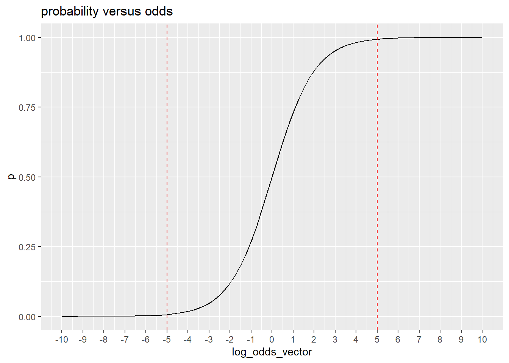
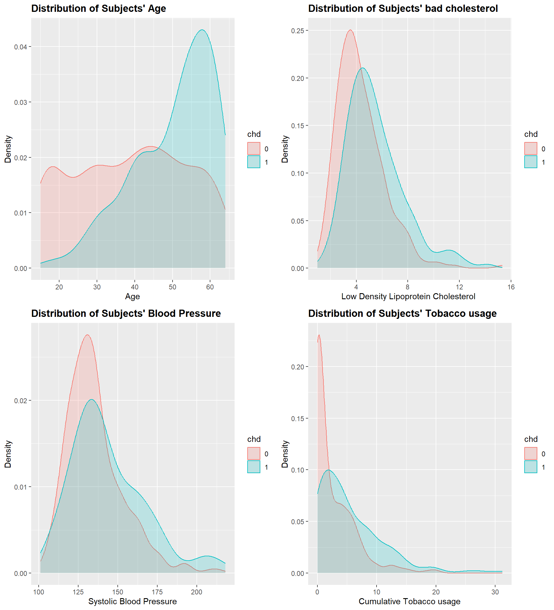
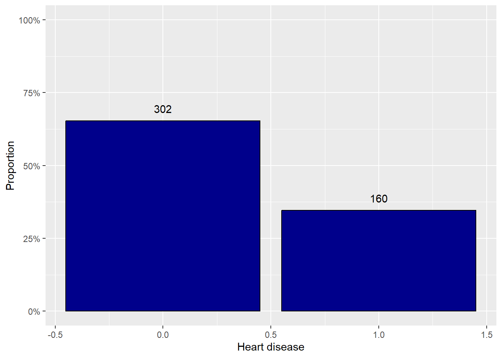

\text{logit}(\pi_i)=\text{log}(\frac{\pi_i}{1-\pi_i}) = \beta_0 + \beta_1x_{i,1}+...++ \beta_px_{i,p} - Unfortunately, there are only a few simple cases where these parameter estimates have closed-form solutions; i.e., we cannot generally write out the parameter estimates in terms of the observed data like we could for the single probability estimate \pi in Section 1.1.2.
Instead, we use iterative numerical procedures, as described in Appendix B.3.2, to successively find estimates of the regression parameters that increase the log-likelihood function
#fit the modelmod.fit <-glm(formula = good ~ distance , family =binomial(link = logit), data = placekick)latex_equation <-extract_eq(mod.fit)print(latex_equation)
see page 83, the odd of success at a particular value of x
\text{Odds}_x = \text{exp}(\beta_0 + \beta_1x)
Log odds to probability
Your aunt offers a service in which she weights coins to make them unfair.
You give her a coin and tell her how much you want the log-odds to change. She returns the modified coin.
For each of the following orders, use your function to compute the resulting probability of heads:
fair coin, increase log-odds by 1.
fair coin, increase log-odds by 2.
fair coin, increase log-odds by 10.
fair coin, decrease log-odds by 1.
fair coin, decrease log-odds by 2.
fair coin, decrease log-odds by 10.
Write an R function that computes the probability of heads, given log-odds.
[1] 0.5
log_odds
probability
10
1.000
2
0.881
1
0.731
0
0.500
-1
0.269
-2
0.119
-10
0.000
In you own words, describe how changes in log-odds translate to changes in probability

You can see in this plot, As log-odds increase, the probability of success increases relative to the probability of failure, and it approaches one. As log-odds decrease probability of success decrease and converges to zero.
If you get log-odds values that are very very small like -10 the probability of success is almost zero, and if you get log-odds values that are very big like 10 or the probability of success is almost one.
The relationship between log-odd and probability is not linear, but of s-curve type, and log odds ratios ranging from -5 to +5 create probabilities that range from just above 0 to very close to 1.
Case Study: South African Heart Disease
Introduction
Target: Probability of getting coronary heart disease, chd
Feature:
High blood pressure, high LDL cholesterol, diabetes, smoking, secondhand smoke exposure, obesity, an unhealthy diet, and physical inactivity are among the leading risk factors for heart disease.
Data Source: Source: Rousseauw, J., du Plessis, J., Benade, A., Jordaan, P., Kotze, J. and Ferreira, J. (1983). Coronary risk factor screening in three rural communities, South African Medical Journal 64: 430–436.
Data Description
sbp: systolic blood pressure
tobacco: cumulative tobacco use (kg)
ldl: low density lipoprotein cholesterol (‘bad’ cholestrol)
adiposity: Body adiposity index determines body fat percentage(calculated as (HC / (HM)1.5) - 18, where HC = Hip Circumference in Centimetres and HM = Height in meters)
famhist: family history of heart disease
typea: A personality type that could raise one’s chances of developing coronary heart disease
obesity: Body Mass Index (BMI) (kg/m^2)
alcohol: current alcohol consumption
age: age at onset
chd: coronary heart disease
Exploratory Analysis
For this case study, we focus on blood pressure, smoking, cholesterol, and age.
Load the data and answer the following questions:
What are the number of variables and number of observations?
What is the type of each variable? Do we need to change it?
Are there any missing values (in each of the variables)?
Are there any abnormal values in each of the variables in the raw data?
tobacco
ldl
sbp
age
chd
obesity
12.00
5.73
160
52
1
25.30
0.01
4.41
144
63
1
28.87
0.08
3.48
118
46
0
29.14
7.50
6.41
170
58
1
31.99
13.60
3.50
134
49
1
25.99
6.20
6.47
132
45
0
30.77
Univariate Analysis
The response (or dependent) variable of interest, Heart disease, is a binary variable taking the type factor.
Use a bar chart to explore the distribution of the response variable (chd). What do you learn?
Heart disease
N
Proportion
0
302
0.65
1
160
0.35
For metric variables, a density plot or histogram allows us to determine the shape of the distribution and look for outliers.
Use a density plot to explore the distribution of explanatory variables. What do you discover?

Bivariate Analysis
Prior to moving on to the fully specified model, it is advisable to first examine the simple associations between the response and each explanatory variable.
Box plots are useful for exploring the association between a categorical variable and a variable measured on an interval scale.
Use a boxplot to examine how the explanatory variables are correlated with the response variable (chd)?
The coord_flip() function is used to keep the dependent variable on the y-axis.

Use the convenient summary_factorlist() function from the finalfit package to tabulate data.
Dependent: chd
0
1
p
ldl
Mean (SD)
4.3 (1.9)
5.5 (2.2)
<0.001
sbp
Mean (SD)
135.5 (18.0)
143.7 (23.7)
<0.001
tobacco
Mean (SD)
2.6 (3.6)
5.5 (5.6)
<0.001
age
Mean (SD)
38.9 (14.9)
50.3 (10.6)
<0.001
According to the plots and the tables, What variable is most important for explaining heart disease? How is that variable correlated with heart disease?
Model Development
Linear probability model
Is the linear probability model an appropriate choice to study the relationship between heart disease and risk factors?
Estimate the following linear probability model and interpret the model results.
chd = \beta_0 + \beta_1 ldl + \beta_2 sbp + + \beta_3 tobacco + \beta_4 age + u
Call:
lm(formula = chd ~ ldl + sbp + tobacco + age, data = df)
Residuals:
Min 1Q Median 3Q Max
-0.8439 -0.3405 -0.1250 0.4365 1.0172
Coefficients:
Estimate Std. Error t value Pr(>|t|)
(Intercept) -0.3493578 0.1405912 -2.485 0.013315 *
ldl 0.0362419 0.0102322 3.542 0.000438 ***
sbp 0.0009739 0.0010670 0.913 0.361839
tobacco 0.0165577 0.0049101 3.372 0.000809 ***
age 0.0076831 0.0016886 4.550 6.89e-06 ***
---
Signif. codes: 0 '***' 0.001 '**' 0.01 '*' 0.05 '.' 0.1 ' ' 1
Residual standard error: 0.4318 on 457 degrees of freedom
Multiple R-squared: 0.1853, Adjusted R-squared: 0.1781
F-statistic: 25.98 on 4 and 457 DF, p-value: < 2.2e-16
What are the advantages and disadvantages of the linear probability model?
Generalized linear model
Estimate the following logistic regression model and interpret the model results.
logit(\pi_i) =\beta_0 + \beta_1 ldl + \beta_2 sbp + + \beta_3 tobacco + \beta_4 age + u
Call:
glm(formula = chd ~ ldl + sbp + tobacco + age, family = binomial(link = logit),
data = df)
Deviance Residuals:
Min 1Q Median 3Q Max
-1.9457 -0.8595 -0.4999 1.0238 2.3906
Coefficients:
Estimate Std. Error z value Pr(>|z|)
(Intercept) -4.535524 0.781360 -5.805 6.45e-09 ***
ldl 0.185131 0.054121 3.421 0.000625 ***
sbp 0.004307 0.005394 0.798 0.424623
tobacco 0.075982 0.025616 2.966 0.003016 **
age 0.046264 0.009852 4.696 2.66e-06 ***
---
Signif. codes: 0 '***' 0.001 '**' 0.01 '*' 0.05 '.' 0.1 ' ' 1
(Dispersion parameter for binomial family taken to be 1)
Null deviance: 596.11 on 461 degrees of freedom
Residual deviance: 502.19 on 457 degrees of freedom
AIC: 512.19
Number of Fisher Scoring iterations: 4
Interpretation of model results
Do the raw coefficient estimates directionally make sense?
Call:
glm(formula = chd ~ ldl + sbp + tobacco + age, family = binomial(link = logit),
data = df)
Deviance Residuals:
Min 1Q Median 3Q Max
-1.9457 -0.8595 -0.4999 1.0238 2.3906
Coefficients:
Estimate Std. Error z value Pr(>|z|)
(Intercept) -4.535524 0.781360 -5.805 6.45e-09 ***
ldl 0.185131 0.054121 3.421 0.000625 ***
sbp 0.004307 0.005394 0.798 0.424623
tobacco 0.075982 0.025616 2.966 0.003016 **
age 0.046264 0.009852 4.696 2.66e-06 ***
---
Signif. codes: 0 '***' 0.001 '**' 0.01 '*' 0.05 '.' 0.1 ' ' 1
(Dispersion parameter for binomial family taken to be 1)
Null deviance: 596.11 on 461 degrees of freedom
Residual deviance: 502.19 on 457 degrees of freedom
AIC: 512.19
Number of Fisher Scoring iterations: 4
Again, all of the explanatory variables except blood pressure are statistically significant and positively correlated with the probability of heart disease, same as the linear probability model.
Recall that (page 83)
\text{OR} = \frac{\text{Odds}_{x_k+c}}{\text{Odds}_{x_k}}=exp(c \beta_k)
- The odd of a success change by exp(c\beta_k) times for every c-unit increase in x
Compute and interpret the estimated odds ratio for a 10-unit increase in each explanatory variable.
# Replace with your coderound(exp(10*coef(mod.logit.h0)),2)
(Intercept) ldl sbp tobacco age
0.00 6.37 1.04 2.14 1.59
The estimated odds of success or having a heart disease change by 6.37 times for every 10-unit increase in LDL or ‘bad’ cholesterol.
Interestingly, the odds of having a heart disease is almost 1 for every 10-unit increase in blood pressure, which means an increase in blood pressure doesn’t change the odds of having heart disease, and it’s consistent with its insignificant coefficient.
Statistical Inference
Hypothesis Test
Using the likelihood ratio test (LRT) for hypothesis testing is a common practice in a logistic regression model.
Use LRT to test whether (obesity) is associated with heart disease.
H_0: \beta_{obesity} = 0
H_a: \beta_{obesity} \ne 0
Use both Anova() or anova() functions.
#mod.logit.ha <- # uncomment and replace with your codemod.logit.ha <-glm(chd ~ ldl + sbp +tobacco + age + obesity, family =binomial(link = logit), data = df)#anova()anova(mod.logit.h0, mod.logit.ha, test ="Chisq")
Analysis of Deviance Table
Model 1: chd ~ ldl + sbp + tobacco + age
Model 2: chd ~ ldl + sbp + tobacco + age + obesity
Resid. Df Resid. Dev Df Deviance Pr(>Chi)
1 457 502.19
2 456 501.07 1 1.1191 0.2901
deviance refers to the amount that a particular model deviates from another model as measured by -2\text{log}(\Lambda).
What are the null deviance and residual deviance in the model summary?
For null and residual deviance, the alternative model we use is the saturated model, which has a different coefficent for each data point, leading to perfect prediction, a likelihood of one, and a log likelihood of zero.
The null deviance measures the performance of the worst model using only an intercept, providing a benchmark.
Therefore, how much better (smaller) our residual deviance is compared to the null deviance and how close it is to zero is a measure of model fit.
Sometimes people will compute an R^2 for logistic regression using 1-\frac{\text{Residual Deviance}}{\text{Null Deviance}} since it is bounded between 0 (residual deviance = null deviance) and 1 (residual deviance = saturated model = 0).
Note that we can compute deviance of two separate models by substracting the null model residual deviance and the alternative model residual deviance from separate logistic regression fits. (Why is this?)
Using deviance, test whether (obesity) is associated with heart disease.
H_0: \beta_{obesity} = 0
H_a: \beta_{obesity} \ne 0
We get a p-value of 0.29, the same as what we got from both anova() and Anova() functions, and again we fail to reject the null hypothesis that obesity is not correlated with heart disease given this data set.
With 95% confidence, the odds of having a heart disease change between 2.20 to 18.4 times for every 10-unit increase in LDL or ‘bad’ cholesterol.
What is the main concern with Wald CI?
Wald confidence interval has a true confidence level close to the 95% only when we have large samples. When the sample size is not large, profile LR confidence intervals generally perform better.
Now calculate the profile likelihood ratio (LR) confidence interval using the confint function.
# Replace with your codebeta_ci <-confint(mod.logit.h0)
For an average value of all explanatory variables, compute the Confidence Interval for the Probability of Success given the formula above
pi.hat lower upper
1 0.3089 0.2925 0.3259
Final Visualization
Using both the linear probability and logistic regression models, plot the estimated probability of heart disease for different values of cholesterol, holding other variables constant at their average level.
Discuss which one can better explain this relationship.
Final Report
Display both estimated linear and logistic models in a regression table. Is there any significant difference between their results?
In both models, all the coefficients except blood pressure are statistically significant and positively associated with the probability of having heart disease. Also, LDL is the most correlated variable with the probability of heart disease in both models.
Terms
Table 1: First 10 Penguins
wk
Term
Description
$$\text{equals to}$$
wk1
odd
For a Bernoulli random variable with parameter $p$, the odds are defined as the ratio of the probability of success to the probability of failure,
$$\text{Odd}=\frac{p}{1-p}$$
wk1
logit
This is log of odd
$$\text{logit}(p)=\text{log}\frac{p}{1-p}$$
wk1
odd
from logit, you can get odd. This expression will be used a lot later.
$$\text{exp}(x) =\frac{p}{1-p}$$
wk1
probability
this is probability of success in binary respose case
$$p = \frac{exp(x)}{1+exp(x)}$$
wk2
saturated model
This model is frequently referred as the `saturated model` because the number of parameters is equal to the number of observations, so that no additional parameters can be estimated. It refers to observed proportions of success. See p81
$$\text{logit}(\pi_i) = \gamma_i$$
wk2
likelihood
Also known as likelihood function. It measures how well a statistical model explains observed data by calculating the probability of seeing that data under different parameter values of the model.
wk2
likelihood ratio test
Likelihood ratio test (LRT) is a statistic. P17. Note that this is $\Lambda$
the amount that a particular model deviates from another model measured by the transformed LRT,$-2log(\Lambda)$, see p 81
$$-2\text{log}(\Lambda)$$
wk2
null deviance
The null deviance denotes how much the probabilities estimated from the model logit$(\pi_i)=\beta_0$ for all observation. Measured in transformed LRT, $-2log(\Lambda)$
The $\pi_i$ is estaimted to be the same value for this particular model. See p81
wk2
residual deviance
measures how much probabilities estimated from a model of interest deviatesfrom the `observed proportions of success`. Residual deviance statistics are often calculated as an intermediate step for performing a LRT to compare two models. Measured in transformed LRT, $-2log(\Lambda)$
It is a measure of overall goodness of fit for a model. When you have two different models $H_0$ and $H_a$, you can estimate `the transformed LRT` of $H_0$ by comparing the logit($\pi^{(0)}$ with `saturated model` and also that of $H_a$. When you subtract the transformed LRT of $H_0$ from that of $H_a$, it measures the probability of success under the $H_0$ and $H_a$. p77 and 81
wk2
transformed likelihood ratio test statistic
transformed likelihood ratio test (LRT) statistic follows chi-square degress of freedom. Recommend using it. Better than the Wald Interval